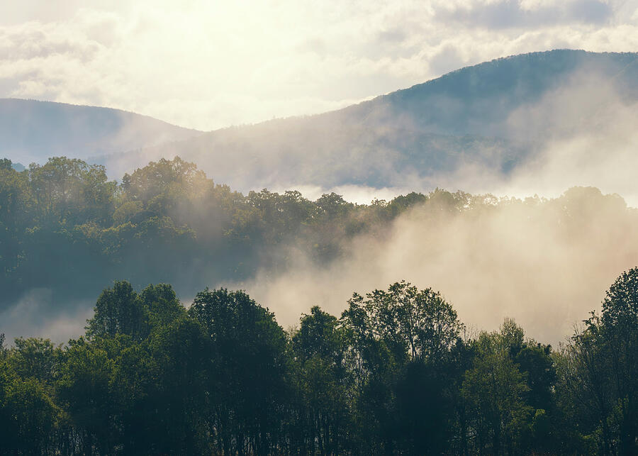
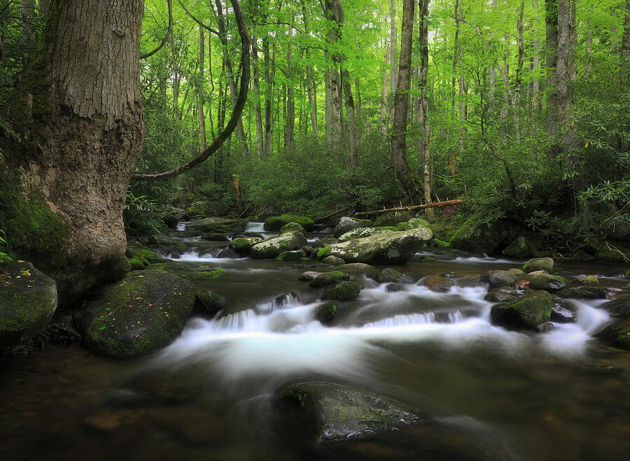
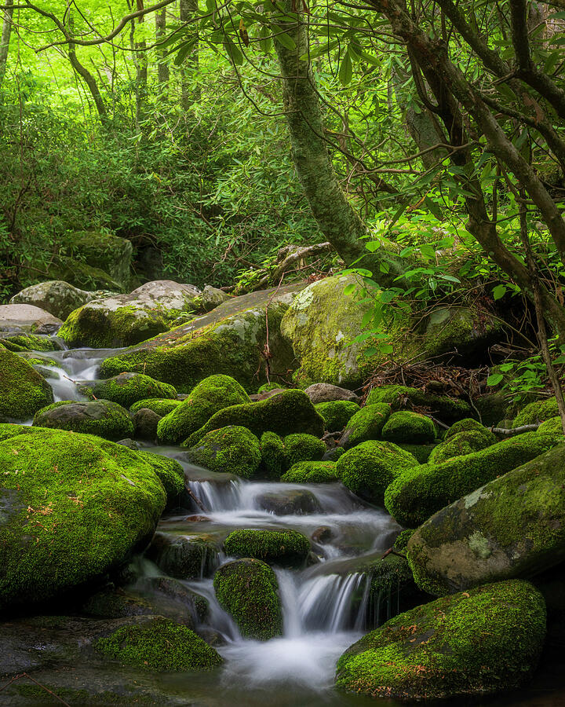
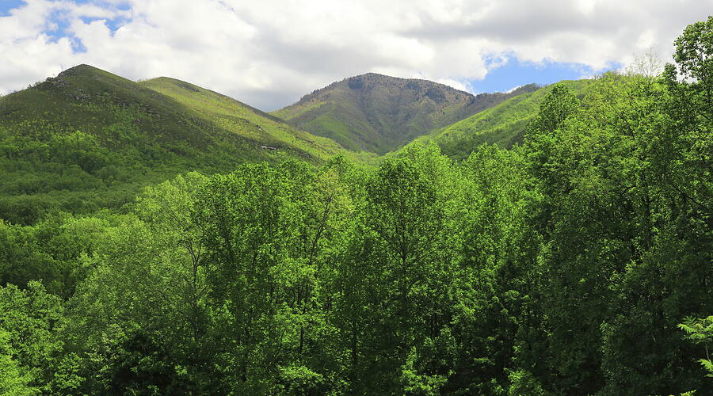

Why The Smokies Stay With Me
The Smokies are not just scenic. They feel alive.
I have photographed a lot of dramatic places, from western mountains to northern coastlines, but the Smokies affect me differently. They do not always announce themselves with one huge overlook. More often, the park works slowly: fog in the trees, water slipping around moss-covered boulders, a bear cub barely visible in the leaves, or a stream that looks ordinary until the light hits it right.
That is part of why I like photographing this area for prints. The images are not only about recording a trip. I am trying to create photographs that can bring some of that quiet, layered feeling into a room. The Smokies can be lush and busy, but when the composition works, the finished piece can feel calm, fresh, and deeply grounded.
With only forty-eight hours, I did not want to chase every possible location. I wanted a small group of images that felt connected: Cades Cove wildlife, early fog, spring mountain greens, flowing streams, and waterfalls tucked back into the forest. That mix gives the collection more range than a simple travel recap.
Cades Cove
Sometimes the image you remember most is the one you could not have planned.
Cades Cove is one of those places where everyone is watching for wildlife, but that does not make a good photograph automatic. A bear sighting can turn chaotic quickly. Cars stop, people get excited, and the whole scene can become more about the crowd than the animal. I try to stay patient and keep the photograph secondary to the moment.
This black bear cub image works for me because it still feels like the forest. The tree, the bright leaves, and the soft background all matter. The cub is the emotional center, but the surrounding green gives it the Smokies atmosphere. Without that setting, it would just be a wildlife snapshot. With it, the image becomes part of the place.

What makes a wildlife print livable is usually the environment around it: the softness of the light, the leaves, the distance, and the feeling that the animal belongs to the scene rather than being forced into it.
Fog & Morning Light
Fog is one of the best things the Smokies give a photographer.
Fog simplifies the mountains. It takes a place that can feel visually crowded and turns it into layers. Trees become silhouettes, ridges separate, and the whole landscape starts to breathe. For interior artwork, that kind of atmosphere can be more useful than a sharp, bright, postcard view.
I am always looking for images that create a mood without demanding too much attention. A foggy Smoky Mountain scene can hold a quiet wall in a bedroom, office, healthcare waiting area, or reading space because it adds depth without adding noise. It gives a room a softer horizon.

Streams & Cascades
The Smokies are built around water, movement, and small decisions.
Stream photography is easy to overdo. A long exposure can make the water silky, but if everything else in the frame is messy, the print will still feel chaotic. In the Smokies, I look for a clear path through the image: rocks that guide the eye, green that frames the water, and enough contrast to keep the scene from becoming one solid wall of forest.
That matters because these are the kinds of images people often choose for calm spaces. Waterfall and stream artwork can work beautifully in wellness rooms, bathrooms, bedrooms, waiting areas, and quiet living rooms, but only if the image feels restful. Movement has to be balanced by structure.

I like these forest stream images because they carry the sound of the place. You can almost feel the shaded air and hear the water moving through the rocks. That is the kind of response I want from a print. Not just “pretty,” but familiar enough that someone wants to spend time with it.
Roaring Fork
Roaring Fork is one of the places where the forest feels close.
Roaring Fork Motor Nature Trail is not just a scenic drive. It is a place where the forest presses in from all sides. Water runs close to the road, moss covers the rocks, and every turn seems to offer another small composition. It is easy to get pulled into photographing too much there.
What I look for are scenes with a natural balance: movement in the water, stillness in the rocks, and enough surrounding green to make the image feel immersive. Those qualities translate well to interiors because they bring in nature without feeling like a loud travel poster.

Spring Green
Green is beautiful, but it has to be controlled.
Spring in the Smokies can be almost aggressively green. That is part of the appeal, but it also creates a problem for prints. Too much bright green without shape can feel flat or artificial on a wall. I try to use darker trees, mountain ridges, water, or fog to give the color some weight.
The goal is not to make the scene less lush. It is to make it livable. A good spring Smokies print should feel fresh, but it should not take over the whole room. It should bring in renewal, shade, and softness without becoming visual noise.

Waterfalls & Forest Details
The smaller scenes often feel the most personal.
Grotto Falls, Place of a Thousand Drips, Little River, and Kephart Prong all offer different versions of the Smokies. Some scenes are open and recognizable. Others are tucked into rhododendron, moss, and deep forest shade. I like having both kinds of images because people connect with them differently.
A big waterfall can become a focal point. A small cascade can become a calming texture. A forest stream can feel meditative. A bear cub can add personality and story. When I build a group of images from one trip, I am thinking about that range — not just what I saw, but where each photograph might actually belong.

That is a big part of how I think now. I am not only asking whether a photograph is technically strong. I am asking whether someone could live with it. Would it still feel good in a room six months later? Would it help soften a space, add a sense of place, or remind someone of a trip they loved? Those questions matter as much as sharpness or color.
Choosing A Smoky Mountains Print
The right Smokies image depends on whether you want calm, story, freshness, or movement.
These Smoky Mountains images are especially well suited for people who want artwork that feels natural without being too formal. They can work in cabins, lodges, living rooms, bedrooms, wellness spaces, healthcare waiting areas, offices, and quiet corners where water, forest, and wildlife imagery make the room feel less sterile.
For a restful room, I would usually start with streams, fog, or forest water. For a warmer and more personal piece, the black bear cub carries more emotion. For a fresh spring feeling, the wider green mountain scenes work well. The strongest choice depends less on the famous location and more on the feeling the space needs.
- For bedrooms, reading spaces, and calm residential rooms, choose fog, forest streams, or softer waterfall scenes.
- For cabins, lodges, family spaces, and gifts, wildlife imagery can add story and warmth.
- For wellness, spa, healthcare, or therapy spaces, choose water imagery with balanced movement and darker greens.
- For office walls, wide mountain and forest views can add freshness without feeling overly decorative.
- For narrow walls, vertical stream and waterfall images often fit better than large horizontal landscapes.